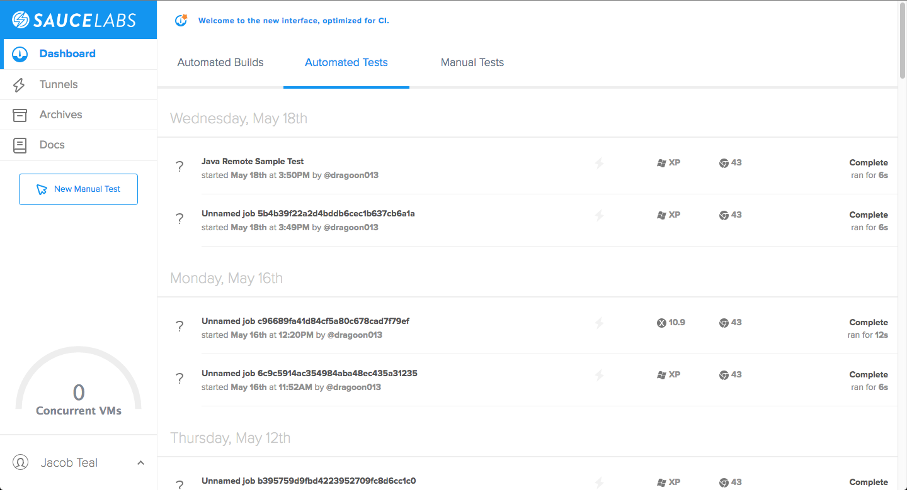

Appium 201
Testing at the speed of awesome
Course Administration
This session is ~3 hours long
10 min. breaks every hour Slides, demonstrations and exercises
PDF copy of the materials is available
Ask questions at any time
The Training Environment
ReadyTech virtual machines
Eclipse
Maven
Appium Server GUI
Android Virtual Device (AVD)
Android vs. iOS
Before we go into the different parts we need to include in a script, let's talk about our training environment.
First off, we'll be working in a VM provided by ReadyTech today. If you have any problems during the course of labs, I will be able to go into your instance and help you out. You can just notify me using the ReadyTech instance to tell me that you need help.
We're also going to be working in Eclipse today. In Eclipse, we have set up the scripts within a framework called TestNG, for Java, that allows us to run the scripts with all of the dependencies it needs very easily.
That within that framework, there is a library, or build tool, called Maven that we are using to grab our dependencies, bundle them together, and then run our script.
Throughout the course today, the way we will run our tests is by using the "Maven test" command, which should compile all of our resources and dependencies together, and run it for us.
For those of you who may not have used Eclipse before, when you type in a line that does not have the right syntax, it will generally underline the offending line or part of the line that you need to fix, in red. If you simply hover or select that part of the line, Ecplise will give you suggestions on how to fix the problem.
In addition to to those frameworks in libraries, we'll be using the Appium Server GUI to faciliate testing on our local readytech machine. We'll also be setting up an Android Emulator that we will install and test our application on.
One last thing before we continue, we won't be testing any iOS applications today. This is due to the limitations of the training environment. So just to be clear, we can test on iOS devices and test iPhone applicaitons with Sauce Labs. The problem lies with the "local" lab environment.
That's not to say I won't go over iOS at all though. I'll be showing iOS examples alongside Android examples throughout the course..
Agenda
Introduction to Sauce Labs and Appium
Appium Basics
Write Appium Test Scripts
Appium Testing with Sauce Labs
Introduction to Testing Frameworks
Automated Testing Best Practices
Introduction to Sauce Labs and Appium
Module Objectives
This module enables you to:
Understand how Sauce Labs fits into the CI/CD Life Cycle
Understand what Appium is and how it is used with Sauce Labs
What is Sauce Labs?
Testing infrastructure in the cloud for web and mobile web applications.
Web Automated Testing
Mobile Automated Testing
Selenium: Desktop and Mobile Browser Testing
Appium: Native Mobile Application Testing
What is Sauce Labs? Sauce Labs is a provider and supporter of Web Automated and Mobile Automated testing.
They support two very large open source projects, namely Selenium and Appium. Selenium is used for Desktop and mobile browser testing, while Appium is used for native and hybrid application testing.
Sauce Labs provides environments that run your Selenium or Appium tests on any browser and OS combination you like - and they have over 500 combinations thereof. (if you include the different browser versions)
Sauce Labs History
Founded in 2008, by Steven Hazel, John Dunham, and Jason Huggins (Co-creator of Selenium).
"Our purpose is to revolutionize testing
so that development teams
are free to innovate and deliver
amazing applications—faster."
Sauce Labs was founded in 2008 by Jason Huggins, co-creator of Selenium (the open source standard for automated testing frameworks) and Steve Hazel, current CTO. They set out to create a cloud-based platform for automated testing to free development teams from the hassle and cost of testing so they can focus on innovating their core capabilities.
CI/CD Cycle
Continuous Integration/Continuous Development
Sauce Labs' value as a time saver is apparent even in its role in Continuous Integration and Delivery.
Traditionally, testing and QA are bottlenecks for application delivery and release. Writing automated tests, maintaining testing infrastructure, painful manual testing, all consume huge amounts of time. The work is never done either, because the product is always changing.
Sauce Labs takes away those worries though. With Selenium and Appium testing, we remove the barrier of time consuming test writing, and with Sauce Labs itself, we remove the need to have a propietary infrastructure. Sauce Labs provides the infrastructure for you, allowing you to test on a variety of platforms in a speedy manner. So you can focus on development, and releases,and leave the testing to Sauce Labs.
Sauce Labs reduces the pain of testing, so that instead of traditionally waiting until the end of the development life cycle to test, you can test iteratively, as you go through each step of development.
What is Appium?
Open source mobile application automation framework developed in 2011 by Dan Cuellar, the Test Manager at Zoosk.
Uses UIAutomation Framework to run in real time like an interpreter.
Simulate mobile gestures
Automate Mobile Application Testing
Appium was developed in 2011 when Dan Cuellar wasn't satisfied with the current landscape of mobile testing tools. Dan came up with the idea of running Apple's UIAutomation framework as a real time interperter and used Apple utilities to execute shell commands, ordered text files to recieve commands, evaluate the output, execute said commands, and write them to disc using Python.
Then he created a C# version of the program, which mimicked Selenium-style syntax to sequentially order javascript commands and the first iteration of Appium was born.
Dan then presented his project at the Selenium Conference in 2012 and caught the attention of Jason Huggins. Jason and Dan worked together to release the source code and then present the project at the Mobile Testing Summit of 2013. Not long after, Sauce Lab fully backed Dan's project, changed the name to Appium and the rest is history.
Local vs. Sauce Labs Appium Tests
Local:
Requires Appium Server running locally or remotely
iOS development requires Xcode tools
Need all the libraries and images to run device simulators/emulators
Sauce Labs:
Appium server is remote and provisioned for you
Real and virtual devices provisioned
Parallelization
Record Results
In general, no Appium test is going to be strictly "local". Running any kind of Appium test requires the use of the Appium Server, which acts as a middleman between the test commands and the emulator or simulator.
You can test android on any OS, (windows, Mac OSX, linux). But testing iOS applications requires a Mac OSX operating system.
Android itself requires the SDK, and a lot of other helpful libraries and frameworks as well.
Sauce Labs handles all of that device management for you. They run an Appium Server themselves, provide multiple mobile OS, version, and type combinations, and rent it out to their customers to run their Appium tests on.
Using Sauce Labs
If hosting Mobile Application testing infrastructure itself isn't enough, Sauce Labs provides a whole slew of other additional features.
Sauce Labs UI

Let's go ahead and take a look at Sauce Labs right now.
Dashboard: On the dashboard, there are 3 different tabs. These help organize the kinds of tests that we run on Sauce Labs.
We have a tab for tests that are run and labelled as builds, one for our automated tests, and one for manual tests.
Tunnels: The tunnels tab will list out all of secure tunnels that are currently enabled and running between Sauce Labs and your local machine.
Account Details: Lastly, our account details page is important. You can see your VM usage, as well as find your access key, which is required for authentication when using Sauce Labs. We'll go into how to use it later on.
Manual Testing
The traditional method of testing applications and sites.
Testing Locally
Sauce Labs Manual Tests
Do the demo on Android!!! It will go faster than iOS.
Traditionally, once your mobile browser application was ready to be tested, you would load it onto a physical device, and then test it with your own fingers. There are a few problems with that, namely, it takes a lot of time to do and you're limited to the devices you have. So then you can run your test manually on an emulator or simulator to take care of the device problem. But the issue of time, of someone physically clicking on the device emulator or phyiscally touching the device is a big problem.
With Sauce Labs, you can run manual tests without having to set up the infrastructure locally. This can help you with memory issues you may run into running simulators and emulators on your own local machine, and can give you a good way test out a mobile browser application on more devices than you could easily do locally.
Do not mention what is below this - for instructor knowledge.
One thing to note about manual testing with Sauce Labs - you can't start a manual test with an application preloaded. There are a couple ways to get around this though. If you start a normal automated test, you can interrupt it, and take control of the app. And if you use Sauce Connect Proxy, then you can interact with a local emulator you may be running, that can have your app installed on it.
Manual Test Demo:
Go to saucelabs.com
Click on manual tests tab
click on new manual test in the top left.
click on android bot
select android emulator for the device
point out sauce connect - then start the session.
Questions?
Module Objectives
This module enables you to:
Understand how Appium works
Understand the basic components of Appium test scripts
Run an Appium test script on a local emulator
Appium Nuts and Bolts
Android UIAutomator and iOS UIAutomation Frameworks
Appium Client Libraries (extends Selenium Webdriver)
Appium Server
Appium GUI
Appium's architecture was developed with a few things in mind.
You shouldn't have to recompile or modify your app to automate it
You shouldn't be restricted to a specific language or framework to write and run your tests
Appium shouldn't reinvent the wheel when it comes to automation APIs
Appium should be open source
First, you shouldn't have to recompile or modify the core appliaction code that you are working with. In addition, no one wants to learn yet another proprietary language, and then test an application that contains test code within it - which can change the nature of the app!
Plus, there are already automation framworks out there, designed by the people who made the devices that you are testing on - Apple and Google.
In order to actually use the automation frameworks, the Selenium Webdriver wraps them both in one API, which is then wrapped by the Appium client libraries. So the vendor automation frameworks provide the ability to carry out the automated interactions, and the Selenium WebDriver provides the communication architecture.
This is what gives Appium it's client/server architecture.
The appium client is simply a library that you can use to write Appium test scripts in your favorite language. These client libraries are extensions of the Selenium WebDriver client, so they should have all the same functionalities, as well as syntax.
The Appium server is a Node.js server that has an exposed REST API. It connects with the client, accepts commands, executes those commands on a mobile device, and then passes the results of those commands back in an HTTP response. The client/server architecture gives us a lot of freedom. It allows us to run the the server on a different machines than where we run our tests. This also allows Sauce Labs to run tests for you on their cloud service.
The Appium GUI is wrapped around an appium server, which means we don't have to worry about having Node installed on our system. It will come bundled with everything it needs to start up the server itself.
UI Automator (Android)
Uses Java to interact with the UI Automator API
Developed by Google as an Automation framework for Android application testing
Documentation: Android UI Automator
Appium interacts with Android devices by using the UI Automator framework that was developed by Google to run it's own automation tasks on devices. Appium enables you to run tests in whatever language you want, not just the java of the framework. It also allows you to run your tests on remote devices/emulators. We can also use the UI Automator syntax directly in ur appium scripts to locate elements.
UI Automation (iOS)
Uses JavaScript to interact with the UI Automation API
Developed by Apple as an Automation framework for iOS application testing
Documentation: iOS UI Automation
The UI Automation tool was written by Apple to interact with iOS applications. Testing scripts written using the UI Automation tool proper use JavaScript, which then calls the UI Automation API to simulate interaction. Appium wraps itself around this API, converting your own Appium test scripts into JavaScripts that the UI Automation tool uses to interact with the application.We can also use the UI Automation syntax directly in our Appium scripts to locate elements.
If you're interested in learning more about either the UI AUtomator or UI Automation frameworks, feel free to check out their documentation.
Testing on Windows Operating Systems
Requirements:
Node.js
Appium.exe
Android SDK (>= API Level 17)
)
Java
Apache Ant
Apache Maven
On a windows operating system, you're only going to be able to test android applications. iOS mobile development requires some technology that only runs on mac.
If you'd like to see the exact set-up steps, you can look in the documentation. This whole set-up should be done already for you in today's lab environment.
Testing on Mac OS X Operating Systems
Requirements:
Requires Mac OS X
Xcode >= 7.1 recommended
iOS SDK(s)
Authorize iOS
Documentation: Running Appium on Mac OS X
If you use a Mac OS regularly, then you can do both android and iOS testing locally. The android set will be pretty much the same, just with some tweaks to fit in with standard mac program installations.
But testing your iOS app on mac requires the XCode tools, the iOS SDKs, and you need to authorize your computer to run the iOS simulator.
Recommend Mac OS X 10.10
Only talk about the auth if asked.
Authorize: You need to authorize use of the iOS Simulator by running the authorize-ios binary made available through npm. If you installed globally, by running npm install -g appium, use
sudo authorize-ios
If you installed locally, the binary will be installed within the node_modules/.bin directory, so use sudo node_modules/.bin/authorize-ios
# alternatively
sudo $(npm bin)/authorize-ios
If you are running Appium.app, you can authorize iOS through the GUI. You need to do this every time you install a new version of Xcode.
Types of Mobile Apps to Test
Mobile Web Browser Application
Native Application
Hybrid Application
There are three different types of mobile applicaitons that require different kinds of test setups.
Mobile Web browser - these types of tests simply pull up your application on a mobile browser, like mobile chrome, FF, safari.
Native app - native app testing goes into the application itself, and works with the native or inherent application elements, rather than using a browser or webview to access your application site.
Hybrid app - Native app that has a bar on the top, bottom, and then pulls up/uses a webview.
All three of these require various settings in your test, with regards to Desired Capabilities. We'll examine those later on.
The Appium Process
Write script
Run script - Sends commands to Appium Server via Appium Client library
Appium Server sends commands to mobile simulator/emulator
Appium Server sends results back
(On Sauce Labs) Test Assets are created
So we went over how appium works on high level, but let's cover the process.
First, we need to actually write our test script. When we go to run it, the Appium Client library that we used to will connect and send the commands to the local or remote appium server. Our script and the commands we write in it all talk to the REST API on the Appium server, via HTTP requests.
The appium server then sends those commands to the device, and then collects and sends the results back via and HTTP response.
Our script then takes those results, and it's up to us to pass those results onto Sauce Labs, or deal with them locally.
If we run this test using Sauce Labs, then one more additional step will be done, which is to create the test records, so the video recording, screenshots, and logs.
Basic Steps of an Appium Script
Set the Desired Capabilities (or Set the Application Path)
Start an Appium Session
Locate an Element in the Application
Perform an Action on an Application Element
Anticipate Application Response
Validate Responses and Reporting Test Results
Conclude a Test
Step through example script - point out each step that correlates to an element!!!!!!!
We'll go over each of these steps throughout the course today.
Lab 1: Set-up
Double-click the Android_virtual_device.bat
file on the desktop to start the AVD.
Double-click the Appium desktop icon.
After the device loads, press the play button on the Appium GUI.
Open Eclipse from the desktop shortcut.
Just as a note for how these labs are going to work, I will always start by walking through the lab, and then I will give you guys time to do it as well. I'll wait to actually run our script when we are all done, and we can look at the results and what happens together.
Lab 1: Running the Sample Appium Script
In the Eclipse package explorer left panel, local-java-testng-appium-android > src/test/java > com.yourcompany > Local_SampleSauceTest.java
.
Note the identified WebElement, and what we are enacting upon it.
Right click java-testng-simple and select Run As > 9 Maven test.
Click the device and Appium icons on the toolbar.
What did you see happen? How did it happen?
Write an Appium Test Script
Module Objectives
This module enables you to:
Identify elements in your application structure
Write actions into your Appium test script
Run a local Appium Android test
Desired Capabilities
Describes a series of key/value pairs that encapsulate aspects of a browser.
Web Browser
capabilities.setCapability("platformName", "Android");
capabilities.setCapability("platformVersion", "4.4");
capabilities.setCapability("deviceName", "Android Emulator");
capabilities.setCapability("browserName", "Chrome");
Native/Hybrid
capabilities.setCapability("platformName", "Android");
capabilities.setCapability("platformVersion", "4.4");
capabilities.setCapability("deviceName", "Android Emulator");
capabilities.setCapability("app", "https://github.com/appium/app.apk");
First thing we need to consider when writing out a new appium script is the desired capabilties. The desired capabilities are basically the settings we want to apply to the webdriver, which starts up and drives interaction with an emulator/simulator.
With Appium, there are couple of different kinds of applications we can test, and in general ,you will need different sets of capabilities to run test you application successfully, depending on if you're running it remotely or locally.
We are going to be testing on the generic Android Emulator. We will also load up our app from github onto that device and run our test on it.
There are quite a few desired capabilities we can set, and we'll take a look at some of them more in depth later. A key capability I want to point out here though is the "app" capability. You'll notice it goes to github.com to grab the app. We can set this to many different locations, and when doing local tests, it can point to somewhere in your filesystem as well. Sauce Labs also has their own application storage solution that can be used when running appium tests.
Appium and Mobile Drivers
Android
AndroidDriver<MobileElement> driver = new AndroidDriver<MobileElement>(
new URL("http://localhost:4723/wd/hub"),
capabilities);
iOS
IOSDriver<MobileElement> driver = new IOSDriver<MobileElement>(
new URL("http://localhost:4723/wd/hub"),
capabilities);
That brings us to the acutal driver itself, that takes in the desired capabilities, starts an appium session with those settings, and communicates with the emulated/simulated device.
These two examples we have here are both for starting tests with a local Appium Server and emulator/simulator.
Note that the URL goes to localhost:4723, which is the default address for a local appium server.
Different Drivers
RemoteWebDriver
AppiumDriver
These are the different kinds of drivers that are generally available, when testing with Appium or even Selenium. It's important to know the differences between them. These are the drivers that are important to know for Appium testing.
RemoteWebDriver: This driver class comes directly from Selenium. Since Appium operates on the client-server model, Appium uses this to initialize a driver session. All of the other drivers are pretty much built on top of this class.
AppiumDriver: This driver class inherits from the RemoteWebDriver class, but it adds in additional functions that are useful in the context of a mobile automation test through the Appium server.
AndroidDriver: This driver class inherits from AppiumDriver, but it adds in additional functions that are useful in the context of a mobile automation test on Android devices through Appium. Only use this driver class if you want to start a test on an Android device or Android emulator.
IOSDriver: This driver class inherits from AppiumDriver, but it adds in additional functions that are useful in the context of a mobile automation test on iOS devices through Appium. Only use this driver class if you want to start a test on an iOS device or iOS emulator.
Identifying Elements
Locator Expressions are made in Key:Value pairs
WebElement newGameBtn = driver.findElement(
By.id("com.google.android.divideandconquer:id/newGame"));
Locating elements is vital for any test. Without locating our objects in an application, we can't perform actions on them, which means we can't test their functionality!
Generally, our locator expressions are made in Key:Value pairs. In our example here, the key would be the id, specifically, the resource id, which is then followed by the resource id value in parentheses.
Android Locators
UI Automator class name
textView = driver.findElementByClassName("android.widget.TextView");
Acessibility id
textBox = driver.findElementByAccessibilityId("Text");
Android has an automation framework called UI Automator. We can identify elements by their UI Automator framework class names.
In the mobile environment, ids are not, as in WebDriver, CSS ids, but rather a kind of native identifier. For Android, the accessbility id is one of the easiest ways to identify an element. findElementByAccessibilityId() maps to the "content-desc" value of an android element.
Android Locators cont.
-android uiautomator
UiDevice device = UiDevice.getInstance(getInstrumentation());
UiObject cancelButton = device
.findObject(new UiSelector()
.text("Cancel"))
.className("android.widget.Button"));
WebElement cancelButton = driver.findElementsByAndroidUIAutomator(
"new UiSelector().text(\"Cancel\").className(\"android.widget.Button\")");
The UIAutomator language is the Android specific automation framework, made by Google. The Appium java client library can take in a form of the native UIautomator syntax, and then uses that directly in the app to identify or interact with elements. The results then get converted and passed back to the appium script.
You can see in the top example we have an example of the native UIAutomator syntax. In the below example, we can see the appium script takes pieces of the original syntax in it's argument, which it will then use, in this case, to id a cancel button in our application.
iOS Locators
UI Automation class name
MobileElement fieldTwo = (MobileElement) driver.
findElementsByClassName("UIATextField").get(1);
Acessibility id
MobileElement fieldOne = (MobileElement) driver.
findElementByAccessibilityId("TextField1");
Similar to android, one way we can find an element or set of elements in iOS is through the UIAutomation class name. In our example here, we are selecting the the elements with the class name UIATextField, and then selecting the second element in the resulting list. Hence, that is why fieldTwo is the name of our MobileElement variable.
For iOS the IDs are a little complicated. Appium will first search for an accessibility id that matches. If there is none found, a string match will be attempted on the element labels. Finally, if the id passed in is a localization key, it will search the localized string.
iOS Locators cont.
-ios uiautomation
UIAutomation JavaScript API script
UIATarget.localTarget().frontMostApp().mainWindow()
.scrollViews()[0].cells()
.firstWithPredicate("name matches 'Sign In'");
Appium script (Java)
String uiautoFind = "UIATarget.localTarget().frontMostApp().mainWindow()" +
".scrollViews()[0].cells()
.firstWithPredicate(\"name matches 'Sign In'\")";
driver.findElementByIosUIAutomation(uiautoFind);
DEMO: show how you can find elements using the Inpspector. It won't work on their windows instance (only stays up for 60secs). So we demo on our local comp. But show correlation between getPageSource() XML and the inspector.
Similar to the Android UI Automator framework iOS has one called UIautomation. And it's purpose is the same - to automate iOS apps. So appium takes in the native uiautomation syntax as a string and then takes that string as an arugment in driver.findElementbyiosuiautomation.
Lab 2: Getting the Page Source
Restart the Appium Server.
Bring Eclipse to the foreground.
In Local_SampleSauceTest.java
, write in the following line of code in the line before the tap() action.
System.out.println(driver.getPageSource());
Run the test.
Note the XML that apears in the Eclipse console.
As part of this lab, manually go through the app and show where we are trying to navigate to: Touch Paint. When we take a look at the xml before any scrolling we can see that it is not in the view, and we will need to scroll down before we can find the element.
Lab 2: Analyzing the Page Source
Go to your desktop and open the folder XML Inspector Examples.
Double-click on GraphicsViewScreen.xml.
Note the formatted XML. Can you recognize elements in the XML that appear in the application?
Mobile Specific Actions (Gestures)
Once you locate an element, you can perform an action on it
Perform actions by invoking the driver, and then a gesture action that is performed on an element
So once we locate our elements, there are a couple of different ways we can go about performing actions on them. You can use a lot of the standard actions like click() and scrollTo() that come with the Selenium WebDriver libraries, but we're going to focus on how you can use some Touch, or mobile specific gestures.
Touch Actions
There is a TouchAction class in the appium client libraries, which contain the different actions you can perform on a mobile device.
TouchAction touch = new TouchAction(driver);
The main class that we will use today to implement touch gestures or actions on our elements is the Touch Action class.
A new TouchAction object requires the driver object to be passed into it. Let's take a look at some specific actions we can use.
Gesture Actions
press(x, y)
//press(org.openqa.selenium.WebElement el, int x, int y)
touch.press(btnElem, 150, 100).perform();
moveTo(+x, +y)
//moveTo(org.openqa.selenium.WebElement el, int x, int y)
touch.press(10, 200).moveTo(1, 1).perform();
tap(element)
//tap(org.openqa.selenium.WebElement el, int x, int y)
touch.tap(btnElem).perform();
So first, we have a press(), which places a "finger" on the screen. In this particular case, we are giving it specific coordinates to press. But we could also pass it a webelement. Typically, we see these followed by a release(), which will withdraw the touch. I've inclduded the formal definition here, and it's important to note that you can use the element, and coordinates, or just coordinates or just an element. They can be used seperately. This will be true of the actions below this one as well.
The moveTo() works differently depending on what arguments it has. If it has just coordinates, then it will move the touch to a new position relative to the current position. So if we moved starting from (10,200), and did a moveTo(1,1), we would end up where?
Let them answer.
Good! If moveTo is just given an element, it will move the current touch to the center of the given element. And lastly if it has an element and coordinates, then it will move to that element, but the coordinate reference is set from the top left corner.
Another action we have is tap, which is pretty straightforward. It's essentially a combination of a press() and a release(), just a quick tap on your screen.
Other Gesture Actions
waitAction(int ms)
//waitAction(int ms)
action1.press(element1).waitAction(300).moveTo(10, 0).release().perform();
longPress(x, y, duration)
//longPress(org.openqa.selenium.WebElement el, int x, int y, int duration)
action.longPress(element1).moveTo(x1, 580).release().perform();
perform()
action.longPress(element1).moveTo(x1, 580).release().perform();
Appium performs the touchaction events in sequence. It's also referred to as "chaining". You can add a wait event to control the timing of the gesture.
The longPress works similarly to the other actions we've already seen, but unlike the regular press(), we can include a time argument.
And lastly, we have the perform() function. This is what starts the long chain that is defined in front of it. Which is why all of my actions have performs on the end of them!
It's generally best practice to create a new touch object for each touch sequence you make. So for every perform() you have, it should be done on a unique touchAction object.
There are few more additional ones that you can use, but these are some the more important ones you should keep in mind when starting to write your appium tests.
MultiTouch
MultiTouchAction multiAction = new MultiTouchAction(driver);
TouchAction finger1 = new TouchAction(driver);
TouchAction finger2 = new TouchAction(driver;
finger1.longPress(x1, y1).waitAction(1500);
finger2.longPress(x2, y2).waitAction(1500);
multiAction.add(finger1).add(finger2).perform();
And lastly for actions, we have Multitouches.
Multitouches require the MultiTouchAction class. The MultiTouchAction class takes in different touchaction objects, and then performs their actions.
You can see that multitouches work very similarly to touchactions, as multitouches are made up of touchaction objects! We can also see the same chaining we used before is also implemented here.
Switching Contexts
Set<String> contextNames = driver.getContextHandles();
for (String contextName : contextNames){
if (context == "NATIVE_APP")
driver.switchTo().window("WEBVIEW_1");
} else if(context == "WEBVIEW_1"){
driver.switchTo().window("NATIVE_APP");
}
}
If you are working on hybrid testing, or if you are a testing a functionality of your native app that requires switching contexts, then you will need to know the swtichTo() function.
A context is generally going to be either a webview or your native application.
When working with a hybrid app, you can work with more than 1 webview. Generally, best practice is to get a list of the webviews that you have available, and then switch to the proper webview context by name.
Explicit and Implicit Waits
Implicit Waits
driver.manage().timeouts().implicitlyWait(10, TimeUnit.SECONDS);
Explicit Waits
//additional libraries required
import org.openqa.selenium.support.ui.ExpectedConditions;
import org.openqa.selenium.support.ui.WebDriverWait;
//usage
WebDriverWait wait = new WebDriverWait(driver, 10);
WebElement messageElement = wait.until(ExpectedConditions.
presenceOfElementLocated(By.id("loginResponse")));
There are many situations in which your test script may run ahead of the website or application you're testing, resulting in timeouts and a failing test. For example, you may have a dynamic content element that, after a user clicks on it, a loading appears for five seconds. If your script isn't written in such a way as to account for that five second load time, it may fail because the next interactive element isn't available yet. The general recommended solution for this is to use explicit waits.
Implicit and Explicit waits shouldn't be confused with TouchAction waits. the TouchAction waitAction() is actually waiting while doing an action, rather than waiting for an element to appear. It is for the touch, not the test.
Lab 3: Action!
Restart the Appium Server.
In Local_SampleSauceTest.java
, add in a scrollTo() below our println .
driver.scrollTo("Touch Paint").click();
So this application is a collection of a lot of different activities that allow us to try out all kinds of interactions. We're trying to reach an activity called "Touch Paint"
So in the application we need to,
click() or tap() on the "Touch Paint" option.
But the application isn't actually showing the element. If we just told it to tap or click on it, it wouldn't be able to find what we want. So we need to scroll down to it until it becomes visible.
scrollTo() is a WebDriver action - that is, it comes from the Selenium library, and will scroll down on the page until it finds an item that has the text string that is the argument.
If you wanted to use tap, what would we have to change or add to our script?
driver.tap(1,driver.findElementByAccessibilityId("Touch Paint"),750)
Scrolling to the text, "Touch Paint" will allow the app to understand what Touch Paint is, and then click will take us to that next activity.
Lab 3: Actions! cont.
Uncomment the three TouchAction objects (eye1, eye2, smile).
Uncomment the smile.press() column of moveTo() actions.
Below the TouchAction objects, insert a line that initiates a press at x=150 and y=200 (150,200).
Add an action to release the touch at the end of the press.
Add a perform() action to the end of the press and release sequence.
Repeat steps 3-5 at x=250 and y=200.
Save the script and run the test.
eye1.press(150, 200).release().perform();
eye2.press(250, 200).release().perform();
The test should fail after the "Touch Paint" option has been clicked.
Lab 3: Waiting...
Restart the Appium Server.
Implement a wait to give the Touch Paint activity time to load.
Below the AndroidDriver object, write an explicit WebDriver wait, that waits for 10 seconds.
Uncomment the wait.until() line.
Save the script and rerun the test.
What do you see on your application screen?
Show where they could find the id "title" that they can use to identify the view screen that needs to load before they do the touch actions.
WebDriverWait wait = new WebDriverWait(driver, 10);
wait.until(ExpectedConditions.visibilityOf(driver.findElementById("title")));
Appium Testing with Sauce Labs
Module Objectives
This module enables you to:
Run an Appium test script on Sauce Labs
Sauce Labs Appium Script Pre-Reqs
Use Sauce Labs storage or another online location to host the application
Sauce Labs Authentication
Desired Capabilities
All Appium scripts call out to an Appium server. So you can think of them as all being remote, even if you are hosting the server on your own local machine. But if your script is going to talk to Sauce Labs, then it needs a couple of other additional items to be setup. First, we'll need to edit the "app" desired cap to point to where the application is hosted. Second, we'll need to authenticate with Sauce Labs. And lastly, we'll need to set additional desired capabilities, which defines what device and OS combination we will use, as well as the version of the OS and appium itself.
Sauce Labs Authentication
Sauce labs authentication in your test script verifies the user and records test results against that user's profile
Environment Variables
export SAUCE_USERNAME="YOUR_SAUCE_USERNAME"
export SAUCE_ACCESS_KEY="YOUR_ACCESS_KEY"
Explicit Variables
public static final String USERNAME = "YOUR_SAUCE_USERNAME";
public static final String ACCESS_KEY = "YOUR_ACCESS_KEY";
One thing to consider when setting up your testing environment or suite, is to use Environment Variables for your credentials or explicitly state them in your script.
Having environment variables with your credentials makes tests more re-usable among other team members. For example, they may be using their own credentials to log in and it doesn't run the risk of potential exposure of credentials.
Sauce Labs Authentication, con't.
Sauce Labs Authentication
Username
Access Key
API URL
public static final USERNAME = "YOUR_SAUCE_USERNAME";
public static final KEY = "YOUR_ACCESS_KEY";
public static final URL = "https://" + USERNAME
+ ":" + KEY + "@ondemand.saucelabs.com/wd/hub";
@Test
public static void main(){
DesiredCapabilities capabilities = new DesiredCapabilities();
//additional capabilities
AndroidDriver<MobileElement> driver = new AndroidDriver<MobileElement>
(new URL(URL), capabilities);
Sauce labs authenticates with the ondemand URL, which includes your user name and access key, to start an appium test session using sauce labs.
Desired Capabilities
Required:
platformName
platformVersion
deviceName
app
browserName
appiumVersion
Optional:
deviceOrientation
appActivity
DesiredCapabilities caps = new DesiredCapabilities();
capabilities.setCapability("platformName", "Android");
capabilities.setCapability("platformVersion", "4.4");
capabilities.setCapability("browserName", "");
capabilities.setCapability("appiumVersion", "1.5.3");
capabilities.setCapability("deviceName", "Android Emulator");
capabilities.setCapability("app", "https://github.com/appium/app.apk");
With Sauce Labs, we can set up the script to run the test on several different platforms. We aren't limited to what we have locally. If we want to indicate more platforms combinations to test on, at the same time, we typically use a framework to enable that for us.
Similar to what we saw a couple slides back, these desired capabilities can have different values, depending on the kind of application you are testing. If you are planning on testing a web application, and not a native application, you won't need the "app" capability, and you can include the name of the browser you want to test on in the browsername capability. If you are testing a native applicaation, then you still will need the browserName capability, and will need to set it to an empty string.
The reason why we set it to an empty string is to override the default, which is firefox, which comes from selenium. If we don't include the empty string, this can confuse the services, as it can read firefox before app, or simply just pass it information it doesn't need.
Application Hosting
Sauce Storage
Locally hosted webserver
Remote host: AWS, DigitalOcean, Github, etc
curl -u <sauce_username>:<sauce_access_key> \
-X POST -H "Content-Type: application/octet-stream" \
https://saucelabs.com/rest/v1/storage/<sauce_username>/<upload_filename>?overwrite=true \
--data-binary @<path/to/myApp.apk>
capabilities.setCapability("app", "sauce-storage:myApp.apk");
DEMO or Labs here. Maybe incorporate into the general lab that comes after this?
After seven days, all assets are cleared from your Sauce Storage.
Lab 4: Testing Sauce Labs
Open a browser and log into saucelabs.com .
Go to My Account from the lower left drop-up menu and copy your access key.
In the Eclipse package explorer left panel, open remote-java-testng-appium-android > src/test/java > com.yourcompany > Remote_SampleSauceTest.java
.
Copy your access key into the script for the ACCESS_KEY variable.
Fill out the USERNAME variable with the correct value for your account.
We aren't going to use sauce storage in this course, so for now we are going to just point to an apk that we will grab directly from the github repository.
note that we have about the same script that we had before, but just a few more desired capabilities and additional variables and parts that we will be working with for the rest of the course.
Lab 4: The Platform Configurator
Note the DesiredCapabilities object in Remote_sampleSauceTest.java
.
Open a browser to the Platform Configurator shortcut.
Set the API to Appium.
Set the Device to Android Emulator Phone.
Set the Operating System to Android 4.4.
Set the Appium Version to 1.4.16.
Set the Web or App Testing to App Testing
Copy and paste the missing required lines into your script.
Should only be missing capabilties.setCapability("browserName",""); and capabilties.setCapability("appiumVersion","1.4.16");
Lab 4: Running the Script on Sauce Labs
Save and run the script.
Open the Automated Tests tab on saucelabs.com .
What do you notice?
What after-test options are available?
Introduction to Testing Frameworks
We'll discuss the different testing frame works here.
Module Objectives
This module enables you to:
Understand the use of Testing Frameworks
Understand the use of asserts in Appium scripts
Use a framework to record test results in Sauce Labs
What is a Testing Framework?
A test automation framework is a scaffold comprised of libraries, dependecies, drivers, and helper scripts that facilitate the execution of Appium test scripts.
Parallelization
Assertions
Reporting
Ok, what does that mean? It's essentially just a bunch of additional libraries we can use in conjunction with our script for several cases:
Record your data: Frameworks often have, or can have a way for you to output the results of your test scripts for you, rather than writing them by hand
Talk to external applications: you can include external libraries in your framework to talk to and send results to places like Sauce Labs
Popular Frameworks
Ruby:
JavaScript:
Protractor
Nightwatch
Mocha
JavaScript:
Mocha
Karma
Jasmine
PHP:
PHPUnit
Sausage
Codeception
C#:
NUnit
MSTest
Perl:
TestMore
There are quite a few different frameworks out there. Sauce Labs has a github page with examples of scripts written using all of these frameworks.
Test Driven Development vs. Behavior Driven Development
TDD: A developer writes the test, and then writes code, and tests that code continuously, until the test passes.
BDD: A way to plan and develop code similar to TDD, but allows teams to include non-technical members when writing tests for scenarios and features
In the QA/Test industry, there are a couple of different ways of thinking about how to develop applications with testing in mind. One of those is TDD, where you write a test, and then write the code until the test passes. Antoher variant is to plan the same kind of testing, but on a higher level, basically written in a more colloquial manner though.
TDD is also somewhat synonymous with "test first" development. BDD means writing tests that read like a book, almost in full sentences, so people can understand precisely what a test is trying to accomplish.
TDD Planning Example
Sauce_counter() needs to count the number of sauces inputted
Pasta_counter() needs to count the number of pastas inputted
sNpComparer() needs to compare the counts and make sure that they are equal
This is an example of TDD, because we have idenfitfied features of the program that need to be made, and we have a function for each one, which details very explicity what each will do.
BDD Planning Example
Feature: Pasta and Sauce Matchmaker
Scenario: Some sauces
Given I have 5 different kinds of Sauce
When I have 5 different kinds of Pasta
Then my chef will be happy
This is an example of BDD, which uses the Given, When, Then, method of planning. It details the actual goals of what the application or feature needs to accomplishes, in terms of a user story, rather than explicit functions. In this method of planning, we are making sure that the end goal or the business objective will be accomplished.
BDD Framework Example
@Given("^I have (\\d+) sauces for my pasta")
public void the_number_of_sauces(Int arg1) throws Throwable {
}
@When("^I have (\\d+) kinds of pasta")
public void the_number_of_pastas(Int arg1) throws Throwable {
}
@Then("^My chef will be (.*)$")
public void the_feeling_is(String arg1) throws Throwable {
}
This is an example of BDD using CucumberJVM, a BDD testing and code writing framework. We can see how we may write out functions for the Given, When, Then, example we filled out.
BDD Frameworks
JavaScript:
CucumberJS
PHP:
Behat
C#:
SpecFlow
Asserts
A testing framework directive that assumes a value to be true, and stops the test and/or throws an error if false.
assertTrue("The button is not visible", compassBtn.isDisplayed());
A common element of Appium scripts are Asserts. Asserts come with whichever testing framwork that you have decided to work with. They generally check whether a particular value is true or not. For example, if the compassBtn is not clickable, then that means the assert will fail, and the test will fail as well. It's basically the test itself. If an assert fails, that generally means the test has failed as well.
Assert Functions
assertEquals
assertNull
assertSame
assertThrows
assertTrue
assertEqualsNoOrder
Documentation: Assert Class details
There are a lot of different kinds of assertion checks that you can make. All asserts will cause a test to fail, if the check or comparison returns false. Assert equals will compare two object's values. assertNull will assert the value of an object is null. assertSame will assert two objects are the same object. and so on.
You find the full information on using asserts (with the testNG java framework) here: assertion class details
Lab 5: Assertions
Note that the title of the Touch Paint activity is Graphics/Touch Paint.
Write an assertEquals assertion that uses the getText() function on the title WebElement object.
The assertEquals assertion should compare the value of title.getText() to the expected value, namely "Graphics/Touch Paint"
Save the script and run the test.
We want to make sure that our script ends up where it needs to go. In order to do so, we search for the text descriptor for the touch Paint activity we are performing actions on.
Demo the title as it appears in the applicaition. It should say Graphics/Touch Paint. Say that the getText() will get the text value of the title. If you feel inspired, you can open the inspector on your local machine to show the them the value of text is indeed what appears as the title.
assertEquals(title.getText(), "Graphics/Touch Paint");
Record your Results with Sauce Labs
Use the update_job method in the Sauce Labs REST API after the test runs
Use the Java Helper library; it will automatically send pass/fail results to Sauce Labs
Configure your testing framework to send results to Sauce Labs
Locally it's not an issue to record results, you can just print results to a file or on the console. But if we want to send details to Sauce Labs on whether a test has passed or failed, rather than just complete or not, we will have to use the Sauce Labs API or a test framework.
Lab 6: Record Keeping
Open the Remote script for editing.
Uncomment the id variable under the AndroidDriver line.
Uncomment the AfterMethod function at the bottom of the script.
Save the script and run the test.
Open the Remote script for editing.
Change the expected string in the assertEquals to "Graphics/Touch Banana".
Save the script and run the test.
Open the saucelabs.com UI. What has changed about the test results?
Testing Strategy and Best Practices
General best practices, testing methodology
Module Objectives
This module enables you to:
Understand testing strategies for setting up automated testing
Label, name, and tag your tests to faciliate searching for past tests on Sauce Labs
Small, Atomic, and Autonomous Testing
Small: Tests should be short and succinct.
Atomic: Tests should focus on testing a single feature.
Autonomous: Tests should be independent of other tests.
Short - If you have a test suite of 100 tests running concurrently on 100 VMs, then the time it will take to run the entire suite will be determined by the longest/slowest test case. Keeping your tests small ensures that your suite will run efficiently and provide you with results faster.
Atomic - The test makes clear exactly what it is that you're testing. If the test fails, then you should also have a very clear idea of what needs to be fixed.
Autonomous - Tests should not be dependent on the results of one test to run successfully. In addition, an autonomous test should use its own data to test against, and not create potential conflicts with other tests over the same data.
Types of Testing
Unit Testing
Functional Testing
Performance Testing
There are a few different kinds of testing. Sauce Labs doesn't cover them all, but it's important to know what Sauce Labs can and can't do.
Unit Testing
Unit tests are written from a developer persepective to ensure a method or function performs a set of tasks.
Unit testing focuses on testing very small parts of the application, going down to the basic functions and methods
Functional Testing
Functional tests are written from a user perspective to test a functionality or feature of your application.
Performance Testing
Performance tests that gauge and output performance metrics for your application.
Performance testing serves to answer questions such as, can your application server handle a particular load, and does it behave as expected when you push it to its limit? These types of tests are better undertaken with a testing infrastructure that has been specifically developed for performance testing, so all baseline performance metrics are well established and understood before you start the test.
Some eaxmples of performance testing helpers (similar to sauce labs):
Real vs. Simulator/Emulator Testing
Real
Test hardware
Test speed fluctuates
Expensive
Testing on real device
Difficult to set up
Simulator/Emulator
Consistently reproducible
Parallelization
Less expensive
Easier to set up and do on your own
Setting language, location, turn off popup blocking, etc.
Beyond the highlevel testing types, theres what you're actually testing on. Should you test on real devices, or use a simulator/emulator?
There's a lot to be said for both!
You're going to find that your real device testing will be more expensive that testing on a simulator or emulator, whether you set it up yourself or not. It's also more difficult to set up for yourself. Of course, that can be mitigated by testing with Sauce Labs real devices. If you need to test how hardware responds or test hardware capabilities that your app uses, then real device testing is the way to go.
Testing on a Simulator or emulator is going to be easier to set up on your own though. With Sauce Labs, there's no set up at all, but also, your tests will be more reproducible. Sauce Labs spins up a completely new and clean emulator/simulator for every test you run. So you know you are starting from the same baseline everytime. With real devices, it's harder to get that clean slate every time you run a test.
There are a plethora of additional pros as well, including parallelization, cheaper cost to set up and buy, and setting particular options on a simulated device that isn't possible when testing on a real one.
Test Dependencies
Hard coding dependencies to access external account or data
Test Set-Up
Test Teardown
We've talked about avoiding this a bit already, but there are some other dependencies for tests that need to be considered as well.
Security we've talked about as well, we don't want to have a history of our credentials in a git history for example.
Development and testing environments may change between the writing of your test scripts and when they run
Security
Setup
Setup initiates prerequisite tasks to be taken care of before your test runs, usually setting the capabilities, configuring additional browser parameters, and more.
Example:
@BeforeMethod
public void setupLogin() {
DesiredCapabilities caps = new DesiredCapabilities();
caps.setCapability("platform", "Windows XP");
caps.setCapability("browserName", "Chrome");
caps.setCapability("version", "43.0");
}
Teardown
The teardown function includes Post requisite tasks that need to occur, like closing the browser, logging out, or terminating the remote session.
Example:
@AfterMethod
public void after(ITestResult testResult) {
SauceREST restAPI = new SauceREST(USERNAME, ACCESS_KEY);
if (testResult.isSuccess()) {
restAPI.jobPassed(id);
} else {
restAPI.jobFailed(id);
}
}
Object Oriented Testing
Page Objects
Code reuse across tests; reuse common element interactions
Abstraction: With product change, only change one piece of code
Cross-platform tests: abstract your application element objects that exist across iOS and Android
Sometimes we interact with particular elements in our application repeatedly. The nature of applications is that they change over time as well. Instead of writing the same code for the same interacctions, we can add a level of abstraction with page objects.
Cross-platform: allows you to use the same tests when you have an app in both ios and android.
Parallelization
Avoid dependencies between tests
If you chain tests together, when one at the top fails, then they will all fail Use Frameworks
Frameworks include helpful libraries and functionality that can help you make the most of parallelization
Parallelizaiton is where Sauce Labs goes to work. Running in parallel - whether that's across platforms or running several tests at once - even both - is where testing and sauce labs gets really exciting. When we use the three best practices in test writing we talked about early -Short, atomic, and autonomous - then this goes really smoothly.
extra knowledge/words:
One of the main features that Sauce Labs offers is parallelization, the ability to run serveral scripts at once on a variety of platforms. Since tests and commands are sent remotely, these tests take longer to run individually, but with parallelization, we can run them all at once. That is, we can start them all at the same time, which cuts down on the total time tests would normally take, saving time and money for your teams and business.
It's good to avoid dependencies between tests. This goes along with the atomic testing strategy, where we want to create autonomous tests, so that they don't depend on each other, and when one fails, then we know exactly what failed
Debugging
What to look for:
Errors in your app, Sauce Labs UI, Appium Server
Look at the test output, Appium logs, logcat, Android or iOS logs
Use the pageGetSource() command to see struture of app at that moment of error
Inevitably, when we are writing and running scripts, and working with a new tech in general, we will need to debug some kind of error. These are a couple things you should consider, in order to determine where the fault actually is.
Label Your Tests
ID tests
Name tests
Apply build names to tests
caps.setCapability("tags","tag_awesome");
caps.setCapability("build","cool_builds1");
caps.setCapability("name","Java Remote Sample Test");
Docs: Test Configuration Options
Lab 7: Labeling and Naming Your Tests
Open the Remote script for editing.
Add a capability to name your test.
Add a capability to include a build number for your test.
Run the test script.
Open saucelabs.com. How does your test look different on the Automated Tests tab? The builds tab?
There's also a way to set your own build number as well